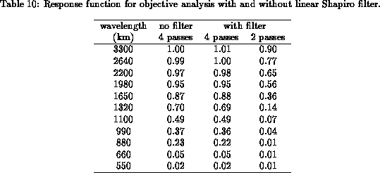

The raw monthly fields are computed from the individual observations in the following manner:
The raw monthly mean fields are then objectively analyzed to filter out spatial noise and interpolate to gridpoints where data are missing. The objective analysis scheme used is essentially the same scheme described by Levitus (1982). This is an iterative difference-correction scheme (Cressman 1959) with a weight function developed by Barnes (1964). The procedure can be summarized as follows:
where is the Barnes weight function:
for
where
is the distance between
the
th gridpoint
and the analysis
gridpoint
. The sum
on the RHS is over the region of influence, i.e., those points that are at
a distance less than
, the radius of influence.
where is a smoothing parameter. Two passes of
the Shapiro filter are performed with
for the
first pass and
for the second pass. The second pass is
intended to restore the amplitude of the large scales which were
slightly damped in the first pass (Shapiro 1970).
The filter is not applied to the grid point if it is located
over land or if any of the four adjacent grid points (north, south,
east, and west) are located over land.
The radius of influence is decreased with each pass in order to analyze smaller scale features with each successive iteration (Cressman 1959). In practice, the smallest wavelengths are noisy. Therefore, the smallest radius of influence needs to be at least seven to eight times the average separation distance (Levitus 1982). The smallest radius of influence we use, 771 km, is over seven times the average separation distance of a 1- by 1-degree grid.
For climatologies and anomalies, 4 passes of the analysis scheme are performed with radii of influence equal to 1541 km, 1211 km, 881 km, and 771 km, as in Levitus (1982). These radii correspond to 14°, 11°, 8°, and 7° in latitude and longitude at the Equator. At 60° latitude North or South, the radii correspond to 28°, 22°, 16°, and 14° longitude. Below 40° S only the first two passes of the analysis are used in an effort to smooth the noisy data in these latitudes. The standard deviation and standard error fields are also noisy. In order to smooth them sufficiently, only two passes of the analysis are applied to those fields, using the two largest radii.

The response function for the objective analysis using four passes with radii of 1541, 1211, 881, and 771 km, but without any linear or nonlinear filter, is given in the second column of Table 10 (from Levitus 1982). As expected, the short wavelengths are damped severely while the intermediate and longer wavelengths receive moderate and little damping, respectively. Table 10 also shows the response function of the analysis including the linear filter, for both four passes and two passes of the analysis. Notice that the damping is much greater for all but the smallest wavelengths with two passes of the analysis compared to that with four passes. For extremely long wavelengths (not shown), the damping from two passes of the analysis is nearly identical to the damping from four passes.
Finally, the first guess for the analysis depends on the kind of data being analyzed: